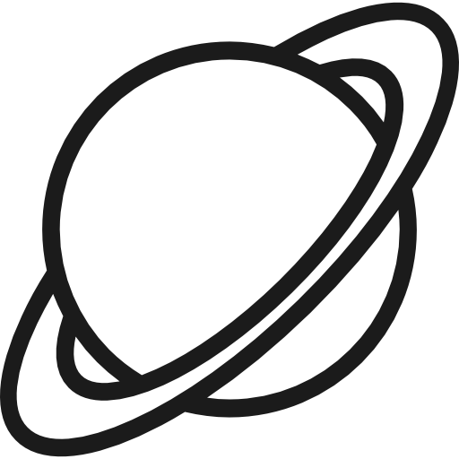

התרחקות מזיהום אור
מתרחקים מאורות העיר ככל שניתן. ככל שהסביבה חשוכה יותר, כך נפתחות שכבות האור העדינות של היקום.
כל מה שצריך לדעת כדי לצפות בכוכבים, במטר מטאורים ובאירועים שמימיים מרהיבים
מתרחקים מאורות העיר ככל שניתן. ככל שהסביבה חשוכה יותר, כך נפתחות שכבות האור העדינות של היקום.
ממתינים כ-15 דקות ללא מסכי טלפון. האישונים יתרחבו ותתחילו להבחין באלפי כוכבים שקודם לא נראו כלל.

אור מנצנץ ורוטט מעיד על כוכב שבת רחוק. נקודה בוהקת באור יציב, חלק וקבוע היא כוכב לכת שכן במערכת.
הסבר קצר על איתור כוכב הצפון, קבוצות כוכבים מרכזיות ומעברי לוויינים:
.png "טלסקופ תצפית")
.png "טלסקופ תצפית")